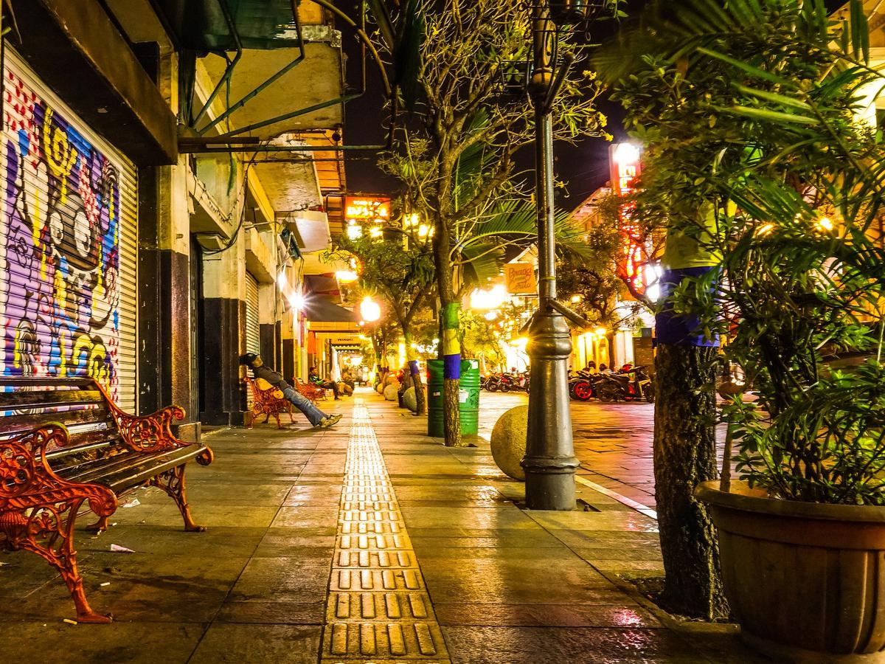
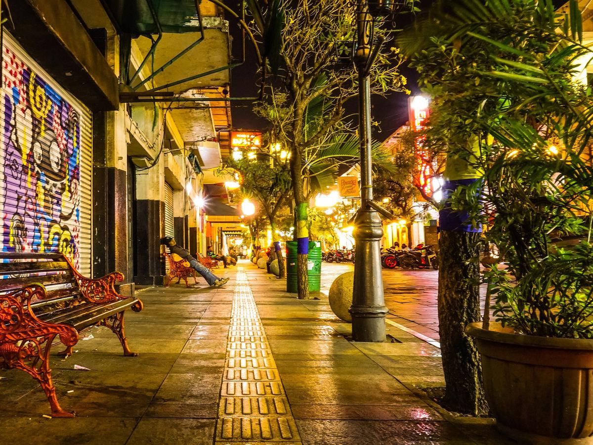

Wali Kota Bandung
H. Yana Mulyana, S.E., M.M.
lahir 17 Februari 1965. Ia adalah seorang pengusaha dan politikus Indonesia
yang sekarang menjabat sebagai Wali Kota Bandung, sisa masa jabatan 2018–2023
menggantikan Oded Muhammad Danial. Ia adalah anak dari tokoh Angkatan 45, Soepardjo.
Latar Belakang
Kota Bandung merupakan kota metropolitan terbesar di Jawa Barat sekaligus menjadi ibukota provinsi tersebut. Kota Bandung juga merupakan kota terbesar ketiga di Indonesia setelah Jakarta dan Surabaya. Bandung merupakan kota terpadat kedua di Indonesia setelah Jakarta dengan kepadatan mencapai 15.051 jiwa/km2. Kota ini terletak 140 km sebelah tenggara Jakarta. Kota ini tercatat dalam berbagai sejarah penting yang pernah terjadi di Indonesia, salah satunya sebagai tempat berdirinya sebuah perguruan tinggi teknik pertama di Indonesia (Technische Hoogeschool te Bandoeng–TH Bandung, sekarang Institut Teknologi Bandung–ITB), lokasi ajang pertempuran pada masa kemerdekaan, serta pernah menjadi tempat berlangsungnya Konferensi Asia-Afrika 1955, suatu pertemuan yang menyuarakan semangat anti kolonialisme, bahkan Perdana Menteri India Jawaharlal Nehru dalam pidatonya mengatakan bahwa Bandung adalah ibu kotanya Asia-Afrika. Bandung merupakan salah satu Kota yang menjadi pilihan Wisatawan dalam berkunjung. Kota Bandung dikenal sebagai kota belanja, dengan mall dan factory outlet yang banyak tersebar dan juga menjadi kota wisata kuliner.
 

Instagram: iam_dxwx
Swadarma Raya 1
Depok, 16415
P: (+62) 888-0103-9847